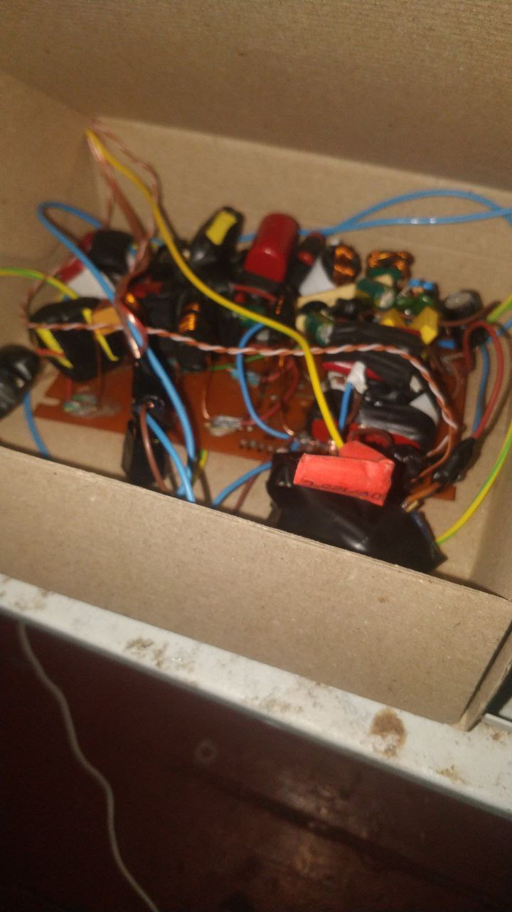
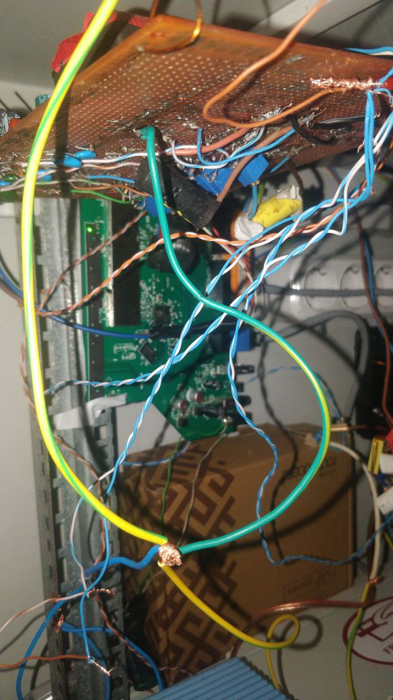
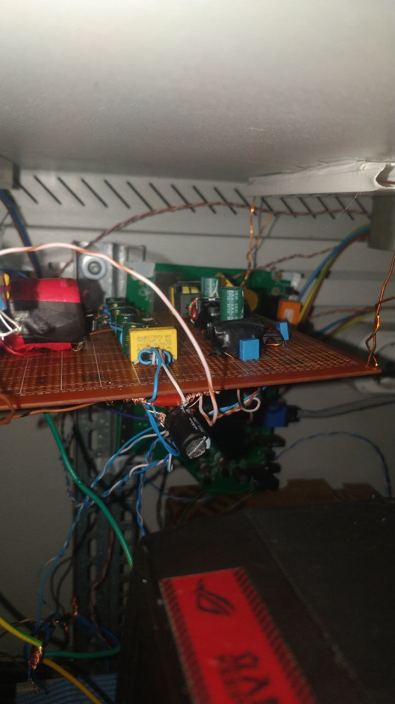
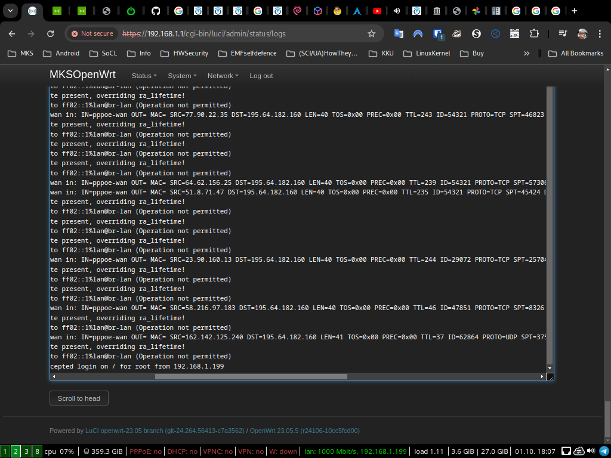
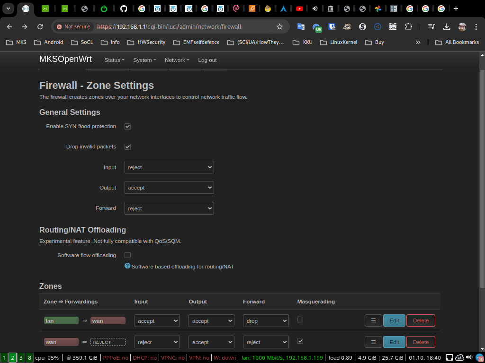
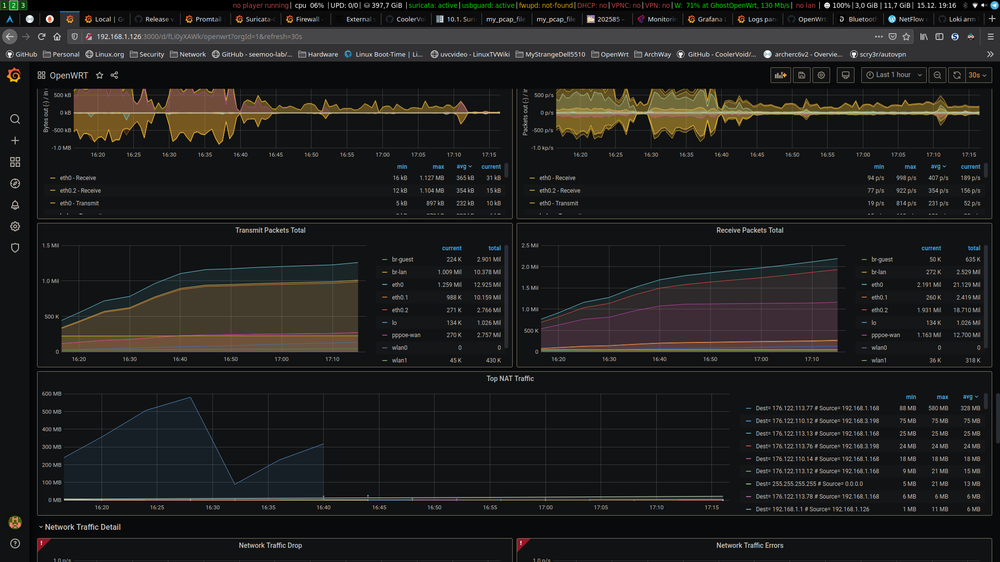
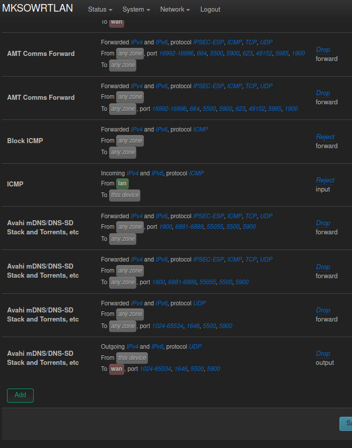

Will be updated
Setup power supply and EMF protected box, install diferent boxes for supply and computers and routers:
  Im still use OpenWrt, from 2021 on this board:
DIY part of power supply, other is separated Chieftec PSU:

Firewall - rules for netfiler and BPF:
Monitoring: exporter on board to Prometheus and from DB to Grafana:
Drop Intel AMT comm
OpenWrt
